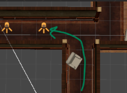
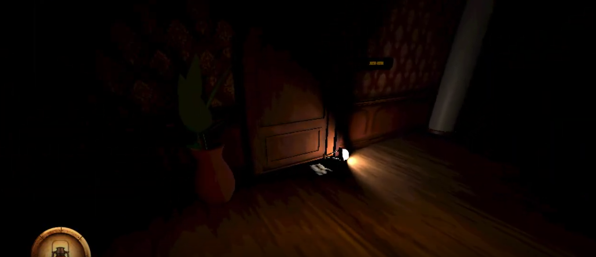
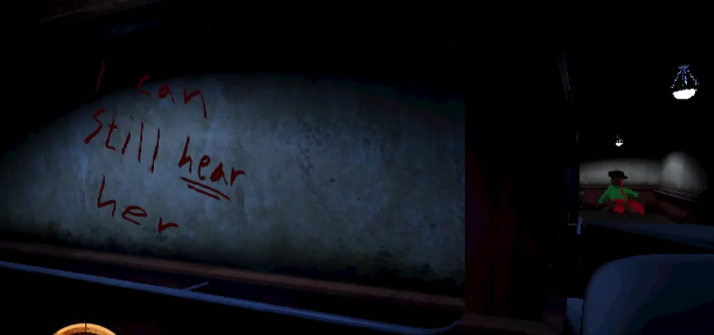

Level Design
The level design was once again the main focus, with a smaller focus on environmental storytelling. The
assets used were from a previous project Eurybia.

Guiding- Obtuse angles are used to guide the players eyes to a specific target first. Use din hallways.
- Lights are placed to draw player in to points of interest and different paths.
- Shapes are also used to wake a curiosity within the players.
- Different colours are used in the lightning to separate the different areas and prevent confusion.

Environmental Storytelling
- Structures resembling makeshift cover from something.
- Clawmarks on the walls from a monster.
- Blood on walls and floor from attacks.
- Warnings scratched into walls by other characters.
- Dead bodies in the distance from both attacks and other characters giving up.

The story
- Player wakes up in a rundown ship, has to go outside into the darkness.
- Navigates through ship, finds notes about an enemy. Finds tools to go further into the ship.
- When in the main hall light guides the player into the showroom where the lantern is located.
- Player is chased and escapes the monster, with the lantern finds a new path to walk and sees the exit is blocked by fallen objects.
- Finds note about magical compass that can move objects. After compass is found the player can escape.
Lessons learned
- How to utilize angles and shapes when guiding in level design.
- Shape a narratve and path for the player using points of interest.
- How to use environmental storytelling to build tension and narrative.
Playthrough
Tools Used
Unity
Level Design
Environmental Storytelling